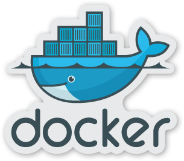

class: center, middle # Organise your Docker containers with <img src="./images/percheron_logo.png" alt="Percheron" width="260px" style="margin-top: -40px" /> <h1 style="margin-top: -10px" class="percheron">Percheron</h1> --- class: middle, center # Ash McKenzie <h3 style="margin-top: -40px">DevOps Engineer at Zendesk</h3> --- class: middle, center  --- # Docker: 101 * A toolchain around Linux Containers (LXC) * Docker is relatively new, LXC arrived in 2008 * Fundamental pieces of Docker are: * The `Dockerfile` * images (O/S disk) * containers (a running O/S disk) --- class: dockerfile-example # Docker: Dockerfile `Dockerfile` defines build steps ```shell FROM gliderlabs/alpine:latest MAINTAINER ash@the-rebellion.net RUN apk add --update-cache redis EXPOSE 6379 CMD [ "/usr/bin/redis-server", "--port", "6379" ] ``` --- # Docker: Images * Naming format: * `<owner>/<name>:<version>` * Name required, owner & version are optional (default `latest`) * `redis:latest` (official) * `gliderlabs/alpine:latest` (unofficial) * `docker build` creates images from `Dockerfile` --- # Docker: Containers * Naming format is arbitrary (default is random!) * `backstabbing_mestorf` * `sleepy_turing` * `docker run` creates containers from images --- class: docker-build-example # Docker: Build example ```shell $ docker build -t ashmckenzie/redis . Sending build context to Docker daemon 104.4 kB Step 0 : FROM gliderlabs/alpine:latest ---> 5bd56d818842 Step 1 : MAINTAINER ash@the-rebellion.net ---> 2c21769397d4 Step 2 : RUN apk add --update-cache redis ---> Running in 4f9afbe971c6 (1/1) Installing redis (3.0.2-r0) OK: 7 MiB in 16 packages ---> 8d5e8b1de70a Step 3 : EXPOSE 6379 ---> 9adebad382f8 Step 4 : CMD /usr/bin/redis-server --port 6379 ---> 92de3334f006 Successfully built 92de3334f006 ``` --- class: docker-run-example # Docker: Run example ```shell $ docker run -ti ashmckenzie/redis _._ _.-``__ ''-._ _.-`` `. `_. ''-._ Redis 3.0.2 (95eec318/0) 64 bit .-`` .-```. ```\/ _.,_ ''-._ ( ' , .-` | `, ) Running in standalone mode |`-._`-...-` __...-.``-._|'` _.-'| Port: 6379 | `-._ `._ / _.-' | PID: 1 `-._ `-._ `-./ _.-' _.-' |`-._`-._ `-.__.-' _.-'_.-'| | `-._`-._ _.-'_.-' | http://redis.io `-._ `-._`-.__.-'_.-' _.-' |`-._`-._ `-.__.-' _.-'_.-'| | `-._`-._ _.-'_.-' | `-._ `-._`-.__.-'_.-' _.-' `-._ `-.__.-' _.-' `-._ _.-' `-.__.-' 1:M 25 Aug 12:30:57.205 # Server started, Redis version 3.0.2 ``` --- # Docker: Benefits * Process / application isolation (?safe/secure?) * Reproducability - use the *same* `Dockerfile` in dev and production! * Leverage the power of hub.docker.com wich has hundreds of official / non-official images * Promotes 'The Twelve-Factor App' (12factor.net) --- # Docker: Challenges * How to manage / connect multiple containers * Dependency of containers * Version control * How do my containers connect to each other? * How do I manage base images? --- class: middle, center <h1 class="percheron" style="font-weight: bold">Percheron</h1> <h3 style="margin-top: -60px">github.com/ashmckenzie/percheron</h3> --- <h1><span class="orange">Percheron</span></h1> * Command line tool, leverages Docker API * Extends upon the `docker build` and `docker run` fundamentals * Similar in purpose to `docker-compose` (formerly `fig`) * Builds Docker images & creates Docker containers * Has a concept of Stacks (groups of containers) --- class: middle, center ## Also.. a kick ass horse! <img src="./images/percheron_horse.jpg" alt="Percheron" width="80%" /> <p class="image-attribution">http://andreaschepisi.deviantart.com/art/Percheron-finished-76929325</p> --- <h1><span class="orange">Percheron</span>: Why?</h1> * Make prototyping applications & services easier * Existing tools did not have: * Base image management * Dependency management * Dependency graph generation * Optimised for developer happiness! --- <h1><span class="orange">Percheron</span>: Features</h1> * Builds Docker images & creates Docker containers * Base image generation & dependency management * Version control * Liquid templating of `Dockerfile` * Support for secrets and userdata * Dependency graph * Written in Ruby! --- <h1><span class="orange">Percheron</span>: How?</h1> * Define a `.percheron.yml` * Similar format to `docker-compose.yml` * Utilise `Dockerfile`s or pull down Docker images * Fundamental pieces: * Units (Docker container) * Stacks (groups of Docker containers) --- <h1><span class="orange">Percheron</span>: Config</h1> ```ruby --- stacks: - name: infra-test description: Infrastructure units units: - name: redis docker_image: redis/redis:3 version: 1.0.0 ports: - 6379:6379 start_args: [ "redis-server", "--port", "6379" ] ``` --- class: percheron-commands <h1><span class="orange">Percheron</span>: Commands</h1> <table> <tr> <td>init</td><td>Initialise a new .percheron.yml</td> </tr> <tr> <td>status</td><td>List stacks and its units</td> </tr> <tr> <td>start</td><td>Start a stack</td> </tr> <tr> <td>stop</td><td>Stop a stack</td> </tr> <tr> <td>restart</td><td>Restart a stack</td> </tr> <tr> <td>build</td><td>Build image(s) for a stack</td> </tr> <tr> <td>create</td><td>Build image(s) & create units</td> </tr> <tr> <td>purge</td><td>Purge a stack</td> </tr> <tr> <td>shell</td><td>Shell into a unit</td> </tr> <tr> <td>logs</td><td>Show logs for a unit</td> </tr> <tr> <td>graph</td><td>Generate a stack graph</td> </tr> </table> --- class: middle, center # Demo ## Perchercon<br/>v0.9.0 --- # GitLab * Hosted Git repositories (like GitHub) * Rails 4 * Sidekiq * PostgresSQL * redis * postfix (SMTP) --- class: middle, center --- <h1><span class="orange">Percheron</span> Roadmap</h1> ## v1.0 * Improve version control * Add `release` subcommand with `--patch`, <br/>`--minor` and `--major` flags * Add `push` subcommand which pushes Docker images up to a Docker Registry * Support inheriting `ENV` variables from executing shell --- class: middle, center <h1 class="percheron" style="font-weight: bold">Percheron</h1> <h3 style="margin-top: -60px">github.com/ashmckenzie/percheron</h3>